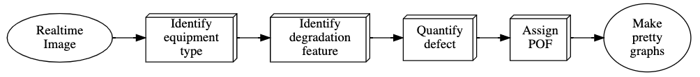

Risk-based Visual Inspection using Artificial Intelligence and Machine Vision
Introduction
The most common type of non-destructive testing: Visual Inspection, is used to detect visible flaws such as corrosion, joint defects, etc. A risk-based visual inspection, a high-level inspection technique, prioritizes the inspection of the equipment that has a higher risk of failure.
I want to share an experimental model that uses machine vision(MV) and Artificial intelligence(AI) that has been trained to perform a risk-based visual inspection in real-time. The model can be trained to not only identify but also quantify the extent of the defect. Ranking it from higher risk to lowest risk. This allows us to prioritize a detailed inspection of high priority/critical equipment first.
Framework
Starting with a basic form of AI: machine learning (ML). The algorithm is a combination of different ML models that interact with each other. The basic framework of the model is described in the figure below. The boxes represent different ML models that communicate with each other. In this article, I want to give a brief overview of some of the models. As an experiment, I have deployed an “Assign POF” (Probability of Failure) model using a python-based server. Details in the last section.

Training dataset
The biggest challenge for any machine learning or AI model has accurate training data. For this experiment, I used images of piping, corrosion defects, etc., available on the internet. And there aren’t many. Just over a hundred relevant pictures and half of them don’t match the requirements I established for training data.
Fortunately, there is a not-so-new concept called transfer learning in the field of ML. Just like human neural cells, the AI model can store knowledge gained while solving one problem and apply it to a different but related problem. We can use this powerful concept to expand the training dataset. Finally, the pre-trained model is trained with actual piping pictures.
The Parameters
Labelling of the dataset is equally important for an efficient ML model. To overcome the lack of a big dataset, I’ve used a supervised machine learning approach. This means, just like in the industrial codes (like API-580,581), I defined the parameters and labelled the datasets accordingly. This is what is done in an actual Risk-based Inspection (RBI).
Handling uncertainty
Despite leveraging the concepts like transfer learning and highly supervised datasets, the model won’t give very accurate predictions. If you think about it, the model has effectively seen less than a hundred images of piping and components. And as you would expect the model comes out confused when you show it a test image.
There is a concept called Bayesian inference, that researchers like to use to handle uncertainty. Providing a Bayesian logic to the model eliminates some of that uncertainty. Of course, it comes with a cost. The model becoming over-confident of the predictions. But that can be solved once the model has experienced a large dataset, so for now, it’s a great starting point.
For interested readers, I’ll leave a link to some of my other research at the end, where I’ve used Bayesian inference.
Testing
Here are some results of the testing of the model.
This version of the model is tasked to identify and quantify the corrosion. I’ve tested it on the propane tank at my home. For the lack of field image, I'd argue the propane tank resembles industrial pressure vessel you'd find in the field. And as I mentioned earlier, knowledge of ML is easily transferable.
Some more results of testing on piping components: joints and at pipe supports.
Here is output from another model tasked to assign risk and make a risk matrix for a batch of five different pipes (consequence of failure randomly assumed).
Demo
I am still trying to further fine-tune the entire model. For demonstration purposes, I’ve made a small python-application for the “Assign-POF” model.
What does it do?
It takes an image, compares it with what it has memorized, compares it with the parameters of the risk assessments and estimates its probability. A few things to consider:
The model is undertrained and has a data-bias. It can only give accurate perditions on certain kinds of images that it understands.
As described in the framework figure, this is the “Assign-POF” model only. I’ve very limited programming skills, not enough to put the entire model on the server. So, it will try to assign POF on whatever you throw at it, even cat pictures. Ideally, this will be filtered out by the “identify Equipment type” model, so that the model will only see the defects that it has to quantify.
Conditions:
For the training of the model, I’ve very carefully labelled the parameters that integrity engineers use to quantify the risk. For example, pitting corrosion gets a higher probability of failure than surface paint coating damage. For the dataset, I’ve selected the images that satisfy the regulatory requirements for Visual Inspection. So the model expects the input image in a similar format.
As an example, the inspection code by DNVGL-CG-0051, provides the following guidelines for a visual inspection.
The luminance at the surface shall be minimum 500 lx. If required to obtain a good contrast and relief effect between imperfections and background, an additional light source should be used. All techniques and options that will be able to enhance the detectability of defects are allowed as far as the surface will not be damaged and/or the product functionality will not be influenced. For performance of direct inspection, the access shall be sufficient to place the eye within 600 mm of the surface to be inspected and at an angle not less than approximately 30°”
Risk-based visual inspection using AI
For now, the online model doesn't 'learn' (or save) from the uploaded image. Ideally the model can continiously improve as it learns from new images.
Reference
Paper 1
Paper 2